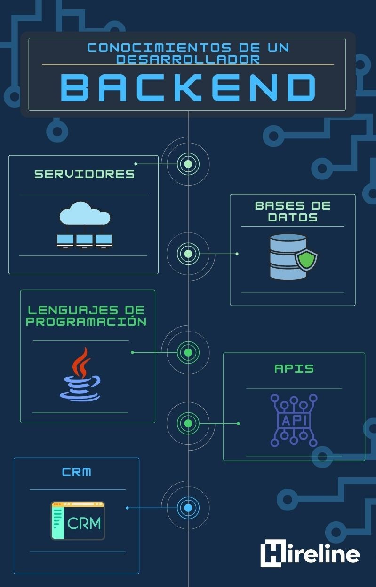

Programación Back-End.
La programación back-end , también conocida como desarrollo del lado del servidor, es
una parte esencial en la creación de aplicaciones web y sistemas de software. Es responsable
de gestionar la lógica del negocio, manejar las solicitudes del usuario, interactuar con
bases de datos y proporcionar respuestas adecuadas al cliente. Es la columna vertebral que
permite que las aplicaciones funcionen de manera eficiente y escalable.
Lenguajes y Tecnologías. back-end , se utilizan diversos lenguajes de
programación y tecnologías, cada uno con sus propias ventajas y características específicas.
A continuación, describiré algunas de las tecnologías más populares utilizadas en el
desarrollo back-end :
Java. Es un lenguaje de programación orientado a
objetos que destaca por su portabilidad y versatilidad. Su robusta biblioteca
estándar y los frameworks como Spring y Hibernate lo convierten en una opción popular
para aplicaciones empresariales y sistemas complejos.
Python. Es conocido por su legibilidad y
facilidad de uso. Python. es ampliamente utilizado en el desarrollo
back-end debido a sus frameworks como Django y Flask, que permiten crear
aplicaciones web rápidas y eficientes.
JavaScript. Aunque es conocido principalmente
por su uso en el front-end, con el advenimiento de Node.js, JavaScript. también
se utiliza para el desarrollo back-end . Node.js permite que JavaScript.
se ejecute en el servidor, lo que brinda una arquitectura de aplicaciones de tiempo
real y de alto rendimiento.
PHP Ha sido ampliamente utilizado en el desarrollo back-end de sitios
web durante muchos años. Es especialmente adecuado para aplicaciones web sencillas y
medianas, y su popularidad ha llevado al desarrollo de frameworks como Laravel y
Symfony.
Ruby. Ruby es el lenguaje utilizado en el framework Ruby on Rails, que
ha ganado una gran popularidad en el desarrollo back-end debido a su enfoque
en la productividad y la convención sobre la configuración.
C#. Es el lenguaje principal utilizado en el entorno .NET de Microsoft para el
desarrollo back-end . C#. es especialmente adecuado para aplicaciones
empresariales y soluciones de Microsoft.
Spring Framework. Un framework de Java que
proporciona una amplia gama de funcionalidades para el desarrollo de aplicaciones
empresariales.
Django. Un framework de Python
que facilita el desarrollo rápido y sencillo de aplicaciones web.
Node.js. Una plataforma de JavaScript que
permite ejecutar código JavaScript en el servidor y brinda soporte para
aplicaciones de tiempo real.
Laravel. Un framework de PHP que
proporciona una estructura sólida y elegante para el desarrollo de aplicaciones web.
Ruby on Rails. Un framework de Ruby que
sigue el principio de convención sobre configuración, lo que facilita el desarrollo
rápido y sencillo.
ASP.NET. Un framework de Microsoft para
el desarrollo de aplicaciones web y servicios utilizando el lenguaje C#. .
Conceptos fundamentales.
Servidores y Hosting: Los programadores back-end se centran en desarrollar la
lógica y la funcionalidad que se ejecutan en servidores. Esto incluye la gestión de
servidores y la elección de plataformas de alojamiento adecuadas.
Bases de Datos: El almacenamiento y gestión de datos son esenciales en el back-end .
Los programadores trabajan con sistemas de gestión de bases de datos (DBMS) para
diseñar esquemas, crear consultas y garantizar la integridad de los datos.
API (Interfaz de Programación de Aplicaciones): Las API permiten la comunicación
entre el back-end y el front-end , así como con otros sistemas externos. Los
programadores back-end diseñan y mantienen estas interfaces para compartir
datos y funcionalidades.
Seguridad: Garantizar la seguridad de los datos y la aplicación es crítico en el
desarrollo back-end . Se implementan medidas de seguridad, como autenticación,
autorización y cifrado, para proteger contra amenazas.
Escalabilidad y Rendimiento: Los sistemas back-end deben ser escalables para
manejar cargas de trabajo crecientes y deben optimizarse para un rendimiento
eficiente. Esto implica la gestión de recursos y la mejora de algoritmos y
estructuras de datos.
Áreas especializadas.
Desarrollo de APIs: Los programadores back-end se especializan en diseñar y
desarrollar APIs para permitir la comunicación entre aplicaciones y servicios
externos. Esto es fundamental en la creación de plataformas y servicios web.
Desarrollo de Bases de Datos: Algunos se especializan en diseño de bases de datos y
administración de sistemas de gestión de bases de datos (DBMS), asegurando un
almacenamiento y recuperación eficientes de datos.
Seguridad Cibernética: La seguridad es una especialización crítica en el back-end .
Los expertos en seguridad back-end se centran en proteger los sistemas contra
amenazas como ataques cibernéticos y garantizar la integridad de los datos.
Arquitectura y Escalabilidad: Los arquitectos de sistemas back-end se enfocan
en el diseño de la arquitectura de servidores y la infraestructura para garantizar
que las aplicaciones sean altamente escalables y resistentes.
Desarrollo de Servicios en la Nube: Los programadores back-end especializados
en servicios en la nube trabajan en plataformas como AWS, Azure o Google Cloud para
desarrollar aplicaciones y servicios alojados en la nube, aprovechando la
escalabilidad y la infraestructura proporcionada por estas plataformas.
